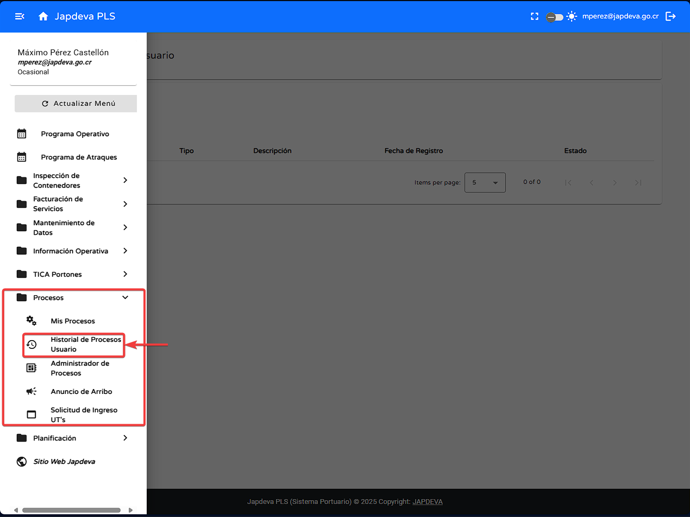

Bienvenido a la guía de usuario para la pantalla Historial de Procesos Usuario del sistema
PLS. Esta guía
está diseñada para ayudarte a utilizar y comprender de forma sencilla y directa las funcionalidades que
ofrece esta pantalla.
1. Introducción
Ubicada dentro del submenú Procesos, tiene como función principal reflejar todos los procesos
finalizados en relación al usuario logueado, además de brindar opciones tanto de filtrado
como para refrescar la información.
Consejo: Esta guía está diseñada para ser leída en orden, pero puedes saltar a las
secciones que necesites usando el menú de contenido.
2. Funciones principales
1
Búsqueda mediante filtro
Para realizar está función se debe hacer lo siguiente:
Colocar el cursor sobre el espacio en blanco en la esquina superior izquierda de la pantalla el cual
presennta la leyenda Filtro.

Se debe de ingresar los criterios de búsqueda en relación a lo que se desea visualizar en la
pantalla.
2
Función refrescar la información
Para lograr esta función se debe hacer lo siguiente:
Ubicar el cursor sobre el botón de refrescar y presionar sobre él.
Al momento de dar clic sobre este la información más reciente se reflejará en la pantalla de manera
automática.
3
Visualización de información en pantalla Historial de Procesos Usuario
Para brindar una experiencia confortable con nuestros usuarios a continuación se procederá a explicar
cada uno de los diversos campos presentes en la pantalla.
Código: Identificador único del proceso ante el sistema.
Tipo: Tipo de proceso realizado por el usuario.
Descripción: Breve párrafo descriptivo del proceso realizado.
Estado: Estado actual del proceso, en este caso el estado es Finalizado.